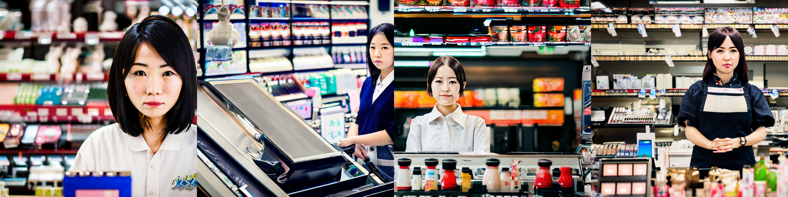

1.画像生成AIで検証
Stable_Diffusion(V2)で生成した画像が、形容詞や職業を変えることでどう変化するかを検証する
入力したプロンプト ＝ ”photo portrait of + [形容詞] + [職業] + , Japanese, detailed, 50mm portrait photography, 8k –ar 2:3”
入力したプロンプト ＝ ”photo portrait of + [形容詞] + [職業] + , Japanese, detailed, 50mm portrait photography, 8k –ar 2:3”
生成された画像



2.テキスト生成AIで検証
googleが公開するAIの学習用データセット「mC4（日本語）」はウェブ上のテキストデータを8700万個集めたもの。
これらのデータがどのURLから集められたかをドメインごとに分析し、データ数を数えてランキングにした
これらのデータがどのURLから集められたかをドメインごとに分析し、データ数を数えてランキングにした